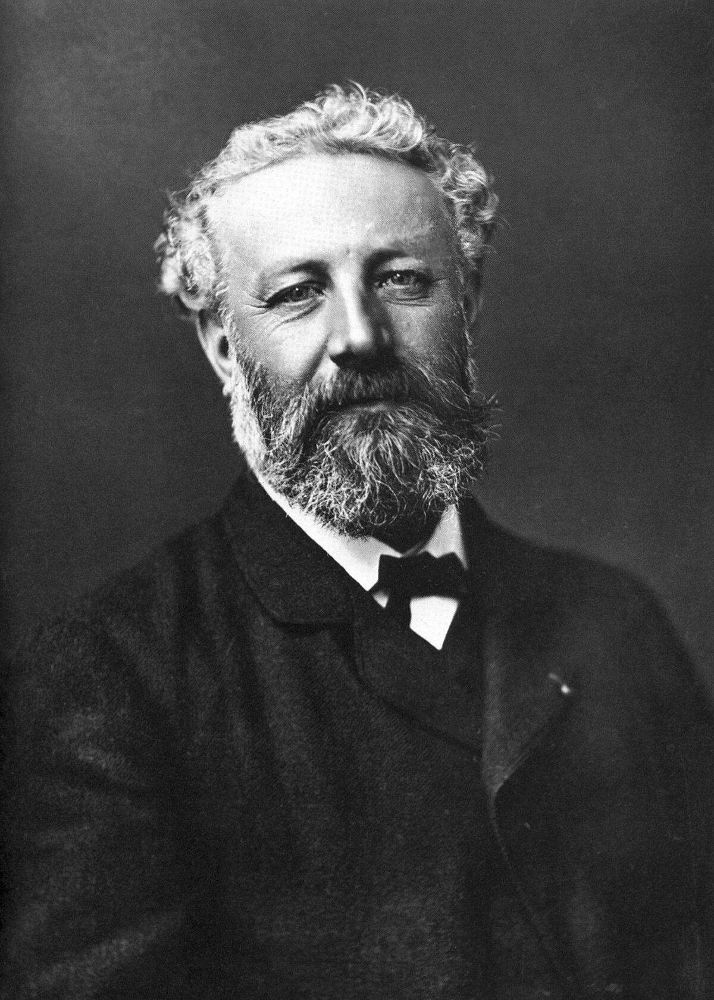
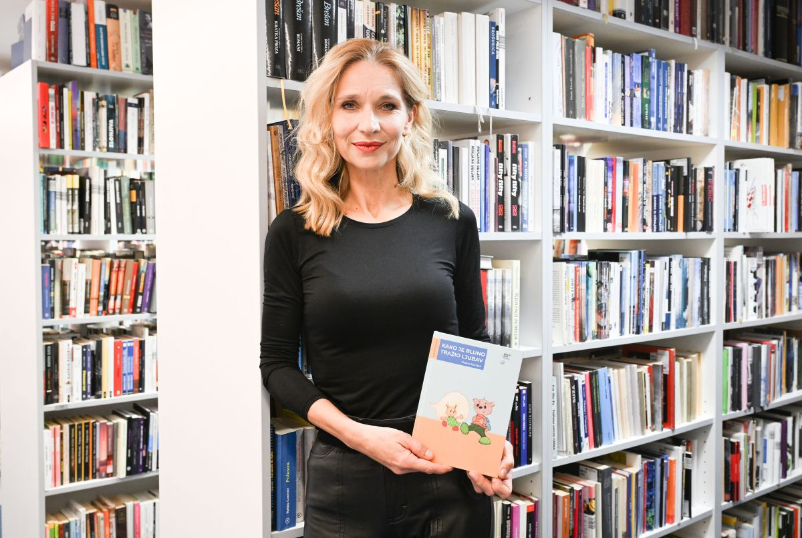
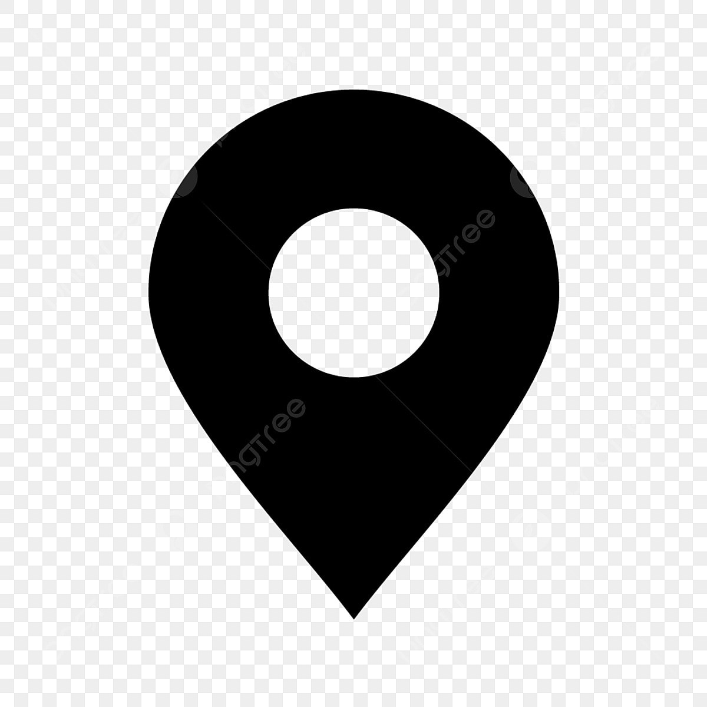
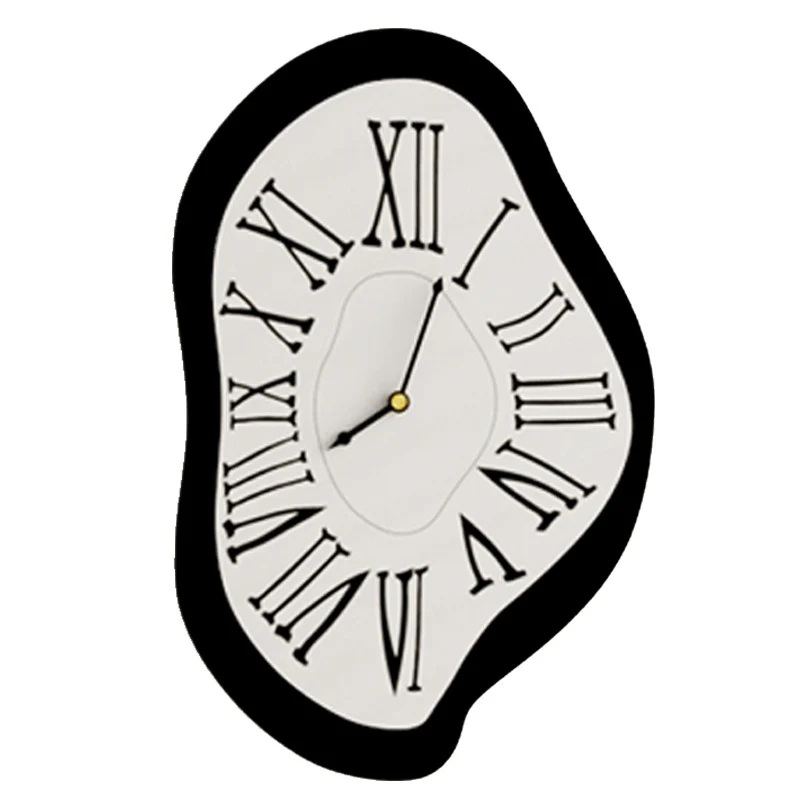

Povijest VERN'a
VERN’ je osnovan 1990. godine, a Veleučilište VERN’ je kao visokoobrazovna institucija pod
imenom Visoke škole za ekonomiju poduzetništva s pravom javnosti počelo djelovati 2000. godine na
temelju dopusnice i rješenja Ministarstva znanosti i tehnologije RH. Kao prvo hrvatsko privatno poslovno
visoko učilište VERN’ je svoju akademsku egzistenciju započeo stručnim studijem Ekonomije poduzetništva koji
i danas predstavlja okosnicu VERN’ovih preddiplomskih studijskih programa i
poslovne kulture koju promiču VERN’ovi obrazovni programi.

Wiki o Julesu
Jules Gabriel Verne (Nantes, 8. veljače 1828. – Amiens, 24. ožujka 1905.) bio je francuski romanopisac, pjesnik i dramatičar.
Najpoznatiji je po svojem nizu romana Neobična putovanja. Verne je također pisao razne kratke priče, kazališne komade,
razne romane, eseje i poeziju.
Njegova su djela značajna po izrazitom utjecaju na znanstvenu fantastiku
i na nadrealizam, inovativnoj upotrebi modernističkih literarnih tehnika poput samoreferiranja,
i njihove kompleksne kombinacije pozitivističkih i romantičkih ideologija.
Studenti VERN'a
VERN’ Kultura nudi svim studentima i djelatnicima Sveučilišta VERN’ mogućnost dobivanja ulaznica za mnoge kazališne predstave i glazbene koncerte u institucijama
poput Hrvatskog narodnog kazališta u Zagrebu, Zagrebačkog kazališta mladih, Koncertne dvorane Vatroslav Lisinski,
Gradskog dramskog kazališta Gavella i još mnogih drugih.
Udruga studenata VERN'a
- Djelatnosti Udruge:
- informiranje i edukacija studenata u ostvarivanju njihovih prava; iniciranje,
provođenje i organiziranje projekata, manifestacija,
radionica, tečaja, skupova, seminara, izleta, putovanja; te ostalih oblika
okupljanja i djelovanja studenata
- Kontakt udruge:
- Molim??
- Sveučilištu VERN’ dodijeljena je Erasmus proširena sveučilišna povelja,
temeljem odluke Izvršne agencije za obrazovanje, audiovizualu politiku i kulturu
Europske unije (Bruxelles).
- Erasmus proširena sveučilišna povelja
- nove perspektive,
- novi obzori,
- osposobljavanje.
Predavači:

Profesori su ključni akteri u obrazovnom procesu, odgovorni za oblikovanje budućih generacija kroz svoje znanje, stručnost i pedagoške metode.
Naša prednost
VERN' (Visoka škola za ekonomiju, poduzetništvo i upravljanje Nikola Šubić Zrinski) je privatna visokoškolska ustanova u Hrvatskoj koja nudi različite obrazovne programe. Evo nekoliko prednosti koje VERN' može ponuditi svojim studentima:
- Praktično usmjerenje obrazovanja:
VERN' je poznat po svom pristupu koji naglašava praktična znanja i vještine. Studenti često rade na stvarnim projektima, što im omogućava da steknu iskustvo i primijene teorijska znanja u praksi.
-
Bliska suradnja s industrijom:
Škola ima snažne veze s poslovnom zajednicom, što može rezultirati raznim prilikama za studente poput stažiranja, mentorskih programa te umrežavanja s profesionalcima iz različitih industrija.
-
Inovativni studijski programi:
VERN' nudi programe koji su usmjereni prema potrebama tržišta rada. Programi često prate nove i rastuće sektore kao što su digitalni marketing, poduzetništvo, menadžment u kreativnim industrijama i slično.
-
Međunarodna suradnja:
VERN' također promiče međunarodnu suradnju kroz razmjenu studenata, gostujuće predavače i sudjelovanje u međunarodnim projektima, što doprinosi internacionalizaciji iskustva studenata.
-
Stručno osoblje:
Škola zapošljava stručno osoblje s bogatim iskustvom iz prakse i akademskog svijeta, što doprinosi kvaliteti obrazovanja i mentorstva.
-
Kampus i resursi:
VERN' raspolaže suvremenim kampusom i infrastrukturom koja podržava učenje i istraživanje, pružajući studentima optimalno okruženje za njihov akademski razvoj.
Kontakti
| Lokacija: |
Zaposli se: |
Kontakti: |
Radno vrijeme: |
| Palmotićeva 82/1 |
Tražimo baš tebe! |
email:vern@vern.hr |
24/7 |
|  |
|
|
 |
nazad na vrh